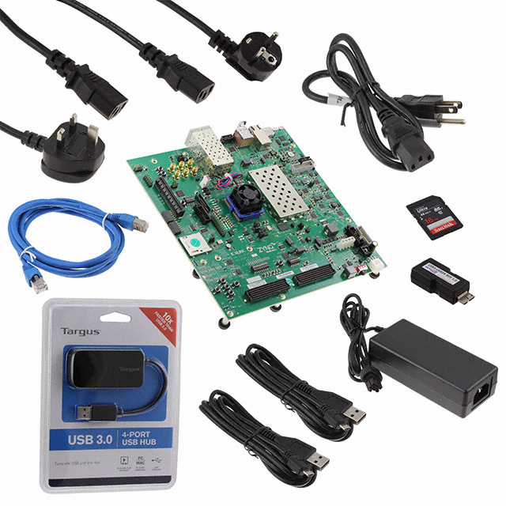

HARDWARE
Board Gallery
The ZCU102 evaluation board and its complete kit contents.

Zynq UltraScale+ MPSoC — Quad-core ARM Cortex-A53 · Dual-core Cortex-R5 · Mali-400MP2 GPU · Programmable Logic · You are accessing this page served directly from the board over USB Ethernet.

The ZCU102 is AMD-Xilinx's flagship evaluation platform for the Zynq UltraScale+ MPSoC family.
The ZCU102 evaluation board and its complete kit contents.
This page demonstrates live JavaScript capabilities served from the ZCU102 over USB Ethernet.
Real-time information about the ZCU102 serving this page.
Real shell session on the ZCU102. Full PTY — colours, tab completion, vim, htop all work.
sudo ./start_all.sh
WebSocket → ws://192.168.10.20:8765
Colors · Tab complete · vim · htop